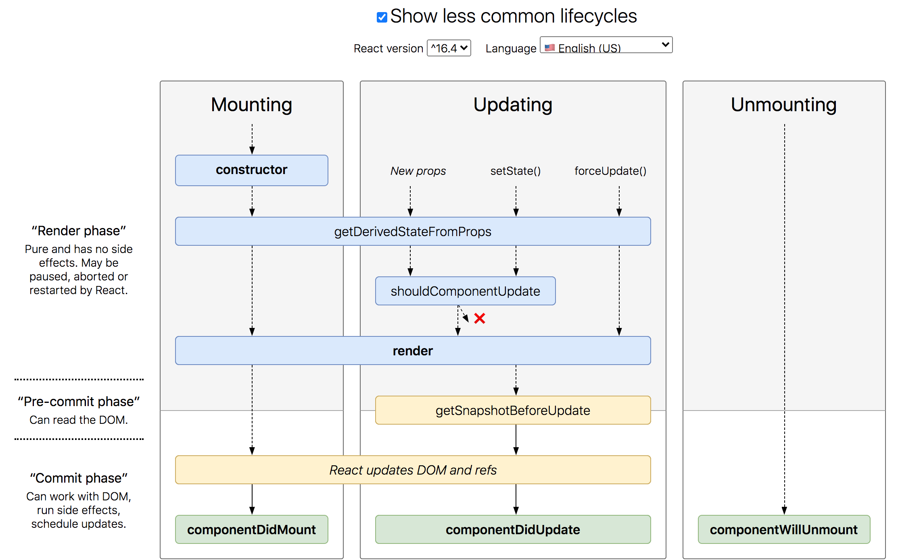

再次複習。
簡述 之前有寫過一篇：React class component 的生命週期 ，這篇就當作複習再練習一次。
這篇主要是參考 W3C 官方文件 來做的筆記，會挑 W3C 是因為它寫的比 React 官方文件 簡潔一點，但如果想知道更細節的話還是建議看 React 的官方文件會更完整。
正題 首先會分成三個階段：
Mounting
Updating
Ummounting
再貼一次這個好用的圖：

Mounting 階段 執行順序：
constructor()getDerivedStateFromProps()render()componentDidmount
constructor 附註：只會執行一次
第一個會被先執行到的 function，會接收 props（來自 React.Component）這個參數，除此之外也會在這裡建立 state 的初始值。
順便做個補充，為了確保新建立的 Component 能夠正確運作，一定要記得先 super(props) 繼承所有 React.Component 的東西，
getDerivedStateFromProps 第二個會被執行的 function，會接受 props（從外面接收到的）和 state（在 constructor 建立的）。
這個階段可以根據 props 來更新或添加 state，向是這樣：
1 2 3 4 5 6 7 8 9 10 11 12 13 14 15 16 17 18 19 20 21 22 23 24 class App extends React .Component constructor (props ) console .log("1. constructor" ); super (props); this .state = { favoritecolor : "red" }; } static getDerivedStateFromProps (props, state ) console .log("2. getDerivedStateFromProps" ); return { favoritecolor : props.favcol }; } render ( console .log("3. render" ); return <h1 > My Favorite Color is {this.state.favoritecolor}</h1 > } } ReactDOM.render(<App favcol ="yello" /> document .getElementById("root" ));
範例可以到 這裡 參考。
render 第三個會被執行的 function，這階段負責把 HTML 變成 DOM。
componentDidmount 附註：只會執行一次
附註：如果跟 getDerivedStateFromProps 改的是同一個 state，那最後會套用它的結果。
第四個會被執行的 function，在「把東西放到畫面上以後」才被執行。
1 2 3 4 5 6 7 8 9 10 11 12 13 14 15 16 17 18 19 20 21 class App extends React .Component constructor (props ) console .log("1. constructor" ); super (props); this .state = { favoritecolor : "red" }; } componentDidMount ( console .log("3. componentDidMount" ); setTimeout (() => { this .setState({ favoritecolor : "green" }); }, 1000 ); } render ( console .log("2. render" ); return <h1 > My Favorite Color is {this.state.favoritecolor}</h1 > } }
範例可以到 這裡 參考。
最後在強調一下，只有 render 跟 getDerivedStateFromProps 會在每次 re-render 的時候會被執行，其他兩個都只有一次，可以到 這裡 參考看看。
Update 階段 執行順序：
getDerivedStateFromProps()shouldComponentUpdate() render()getSnapshotBeforeUpdate()componentDidUpdate()
getDerivedStateFromProps 剛剛有說過 re-render 的時候這個會在執行一次，所以這邊它就是第一個會先被執行的 function。
shouldComponentUpdate 大概是最常看到的一個 function，總之它是一個蠻重要的 function，可以決定要不要 re-render，端看你給的回傳值是 true / false，另外會接收兩個參數是 nextProps 和 nextState：
1 2 3 4 5 6 7 8 9 10 11 12 13 14 15 16 17 18 19 20 21 22 23 24 25 26 27 28 class App extends React .Component constructor (props ) super (props); this .state = { counter : 0 }; } shouldComponentUpdate (nextProps, nextState ) console .log("shouldComponentUpdate" ); console .log("props" , nextProps); console .log("state" , nextState); return false ; } render ( return ( <div > <div > 回傳 false，所以不 re-render</div > <div > Counter: {this.state.counter}</div > <button onClick ={() => this.setState({ counter: this.state.counter + 1 })} > add </button > </div > ); } } ReactDOM.render(<App ppp ="yo" /> document .getElementById("root" ));
範例一樣到 這邊 看。
render render 每一次 re-render 都會被執行，所以在這個階段中當然也會。
這邊 render 要做的事情就是把更新 state 後的 HTML 反應 DOM 上面（注意是 DOM 不是畫面），這邊就不示範了。
getSnapshotBeforeUpdate 這個取名還真有意思，就是能在這邊拿到「更新前的 state」，所以乾脆來拍張照做紀念好了（？
這邊搭配 componentDidMount 來做個示範，原本的顏色是 red，但會改成 yellow，而 getSnapshotBeforeUpdate 會把更新前的 state 印到畫面上：
1 2 3 4 5 6 7 8 9 10 11 12 13 14 15 16 17 18 19 20 21 22 23 24 25 26 27 28 29 30 31 32 class App extends React .Component constructor (props ) super (props); this .state = { favoriteColor : "red" }; } componentDidMount ( setTimeout (() => { this .setState({ favoriteColor : "yellow" }); }, 1000 ); } getSnapshotBeforeUpdate (prevProps, prevState ) document .getElementById("div1" ).innerHTML = ` before update state, the favorite color was ${prevState.favoriteColor} ` ; } render ( return ( <div > <h1 > My Favorite Color is {this.state.favoriteColor}</h1 > <div id ="div1" > </div > </div > ); } } ReactDOM.render(<App /> document .getElementById("root" ));
不太懂的話就直接到這裡看 範例 吧。
componentDidUpdate 就是「更新完以後」會被執行的 function，這邊沿用剛剛 getSnapshotBeforeUpdate 的範例，看一下應該就知道在幹嘛了：
1 2 3 4 5 6 7 8 9 10 11 12 13 14 15 16 17 18 19 20 21 22 23 24 25 26 27 28 29 30 31 32 33 34 35 36 37 38 39 class App extends React .Component constructor (props ) super (props); this .state = { favoriteColor : "red" }; } componentDidMount ( setTimeout (() => { this .setState({ favoriteColor : "yellow" }); }, 1000 ); } getSnapshotBeforeUpdate (prevProps, prevState ) document .getElementById("div1" ).innerHTML = ` before update state, the favorite color was ${prevState.favoriteColor} ` ; } componentDidUpdate ( document .getElementById("div2" ).innerHTML = ` after update state, the favorite color is ${this .state.favoriteColor} ` ; } render ( return ( <div > <h1 > My Favorite Color is {this.state.favoriteColor}</h1 > <div id ="div1" > </div > <div id ="div2" > </div > </div > ); } } ReactDOM.render(<App /> document .getElementById("root" ));
一樣附上 範例 。
Unmounting 階段 簡略來說應該只有這一個：componentWillUnmount
componentWillUnmount 就是在「元件從畫面上移除前」要做什麼？直接看 範例 ：
1 2 3 4 5 6 7 8 9 10 11 12 13 14 15 16 17 18 19 20 21 22 23 24 25 26 27 28 class Header extends React .Component componentWillUnmount ( alert("Before Header ummount" ); } render ( return <h1 > Hello I'm header</h1 > } } class App extends React .Component constructor (props ) super (props); this .state = { show : true }; } render ( return ( <div > {this.state.show && <Header /> } <button onClick ={() => this.setState({ show: !this.state.show })}> Toggle header </button > </div > ); } } ReactDOM.render(<App /> document .getElementById("root" ));